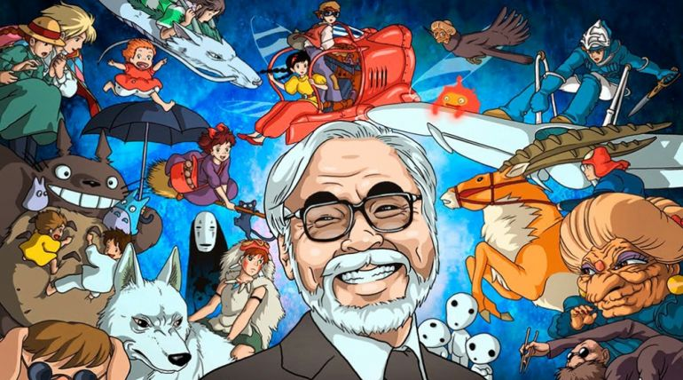
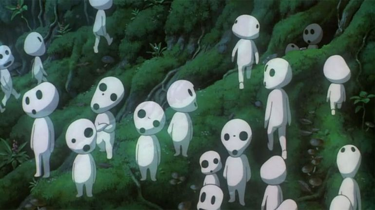
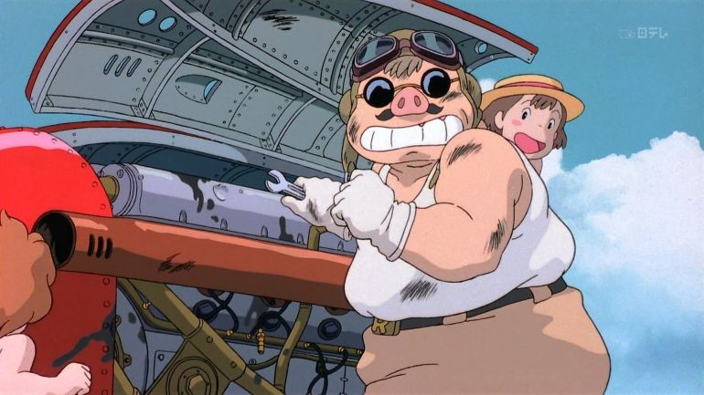
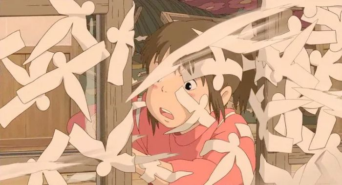
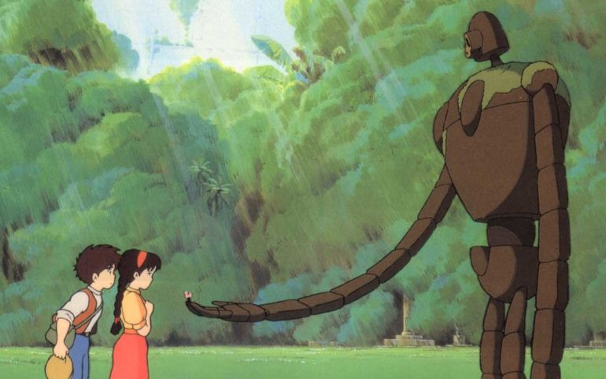

Як розуміти Міядзакі?
Дивні сцени, дивовижні істоти і незрозумілі деталі в мультфільмах Міядзакі відсилають до японської
культури,релігії, мистецтва.
Відшукавши джерела, можна з'ясувати, які асоціації Міядзакі викликає у
самих
японців.
Духи та божества
На початку «Віднесених примарами» ми бачимо, як родина з трьох осіб їде маленьким містом чи селищем у пошуках нового будинку, в який вони повинні переїхати. Герої заїжджають на лісову дорогу, розуміють, що звернули не туди, намагаються проїхати крізь ліс і потрапляють в покинутий парк розваг, який (як потім з'ясується) населений духами. І навіть не просто духами. В кадрі, де показано початок закинутої дороги, можна помітити торії – дерев'яні ворота особливої форми, які завжди позначають вхід в синтоістське святилище. Також, якщо дивитися фільм японською, можна почути, що персонажі-духи називаються не юрей – тобто примари, а камі.Камі – це божества синтоїзму, які (згідно з японським світосприйняттям) населяють увесь оточуючий світ: є камі гір, камі річок, камі смітника. Є могутні камі, які відповідають відразу за цілий комплекс явищ, наприклад, Інарі – божество врожаю, рису, а також вдалого бізнесу, а Ама-терасу – камі сонця і верховна богиня. Рукотворні старовинні речі також можуть стати камі і називаються цукумогамі (у фольклорі часто зустрічаються парасольки і ліхтарі, які стали цукумогамі).
Камі можуть жити у старезних деревах чи камінні. Такі будинки духів виділяються спеціальним джутом з рисової соломи з зигзагоподібними паперовими стрічками (яп. сіменава). Сіменава обвиває камфорове дерево в аніме «Мій сусід Тоторо» (1988) , а Тоторо і є могутній дух цього дерева.
Господар лісу і демони-мононоке
Міядзакі практично в кожному фільмі підіймає проблему подвійного сприйняття людиною вищих сил. Найбільш повно ця тема розкривається у фільмі «Принцеса мононоке» . У ньому Міядзакі зображує протистояння людей, які намагаються підкорити первозданний ліс «на благо цивілізації», і тих, хто населяє цей ліс: міфічних створінь, тварин-напівбожеств і дівчини, котра виросла серед вовків.
Саме слово мононоке позначає демона, фантом. На відміну від камі, з якими можливо завжди мати справу (хоч і вони можуть бути джерелами небезпеки), мононоке - завжди ворожа сила по відношенню до людини. У древній і середньовічній японській літературі це слово вживали, щоб описати незвичайні і нездорові стани (від хвороби до ревнощів): «У мене вселилися мононоке». Залежно від того, як персонажі мільтфільму називають створінь з лісу – «камі» чи «мононоке», – ми розуміємо, як вони відносяться до цих вищих сил: з повагою і благоговінням чи з острахом і відразою.
Одна з головних таких амбівалентних фігур у «Принцесі мононоке» – господар лісу, дивовижне створіння з рисами оленя і дракона і мордою, яка схожа на людське обличчя, при кожному кроці якого виростають і відразу гинуть квіти і трава. Опівночі Господар лісу перетворюється в напівпрозорого велетня. В основі цього образу декілька міфологічних істот: дві позитивні й одна негативна. По-перше, це цилинь (кит.) чи кирин (яп.) – чудова химерична тварина, яка уособлює світ і процвітання. Цей образ народився в китайських текстах, але поступово розповсюдився Далеким Сходом.
По-друге, байцзе (кит.) чи хакутаку (яп.) – бик з людським обличчям і очима з боків, захисник мандрівників. Нарешті, третій прототип – дайдарабочі, істота з японського фольклору, чия головна характеристика – великий (вище гір) зріст. Дайдарабочі з людьми не рахується і може ними навіть харчуватися.
Хоча господар лісу деякими персонажами і сприймається негативно, в цілому це, ймовірніше, образ камі, божества. Справжнім мононоке (однозначно негативною силою) в цьому аніме є страшний і дивний стан – чорні черв'яки, які кишать на тілі тих, хто віддається всепоглинаючій люті.
Очищення
Здається, що очищення простору і прибирання – доволі розповсюджений мотив: згадати хоча б Геракла і Авгієві конюшні чи діснеєвську Білосніжку. Проте у Міядзакі він зустрічається частіше, ніж деінде. За цим стоїть японське ставлення до чистоти, яке основане на синтоїзмі, частково поглинувши древні, близькі до шаманізму звичаї. Центральне місце в синтоїзмі займає очищення (яп. о-харае) – як духовне, так і тілесне. Будь-яке забруднення вимагає очищення, і майже все може осквернити: смерть, народження, гріх, хворобу. Невипадково, наприклад, при вході в синтоїстське святилище потрібно помити рот і руки.
Героїні майже всіх фільмів Міядзакі стикаються з необхідністю впоратися з брудом, невлаштованістю. В «Моєму сусіді Тоторо» і «Відьомській службі доставки» їм потрібно лише привести до ладу старий будинок. Завдання, яке стоїть перед Тіхіро з «Віднесених примарами» , ще складніше: вона потрапляє на роботу в купальню духів і повинна спочатку очистити жахливо брудну ванну, а потім викупати там смердюче божество.
Міядзакі з великим задоволенням зображує чистоту після жахливого бруду – і в цьому проявляється сакральне відношення до чистоти, до якої прагнуть адепти синтоїзму, і яке дуже характерне для сучасного японського суспільства.
Перетворення в звірів
Тема перетворення на свиню вперше виникає у Міядзакі в «Порко Россо», де головний герой, по суті, сам насилає на себе прокляття і через ненависть до себе стає свинею. У «Віднесених примарами» на свиней перетворюються батьки Тіхіро, головної героїні, після того як без дозволу починають їсти в ресторані для духів. Цю жахливу сцену можна пояснити за допомогою японсько-буддійського фольклору: переродження в наступному житті в тварину як покарання за жадібність і присвоєння чужого добра – частий мотив японських легенд. Таке покарання підкреслювало силу карми і неминучої відплати. Правда, свиней в середньовічній Японії не розводили, тому найчастіше в фольклорі фігурував бик: стаючи тягловою твариною, людина отримувала шанс відпрацювати шкоду, яка була нею завдана.
На початку фільму Тіхіро перебуває у пригніченому настрої і ображена на своїх батьків і на себе. Поступово вона вчиться бути терплячою по відношенню до оточуючих її дивних створінь, а потім вибачає батьків і рятує їх. Цей мотив рятування батьків дитиною також характерний для буддійських легенд: коли батьки отримують прощення, вони отримують шанс на нове народження.
"У моїх фільмах дуже багато свиней. Можливо, це просто тому, що свиню легше намалювати, ніж верблюда чи жирафа…
Але, якщо казати правду, мені здається, що свиня дуже схожа на людину — за поведінкою та зовні."
— Хаяо Міядзакі
Паперові птахи
Один з головних героїв «Віднесених примарами» - юнак на ім'я Хаку - перетворюється на дракона, якого переслідує зграя маленьких паперових фігурок. Можна здогадатися, що праобраз цих птахів – хітогата (яп. «лялька»), невеликі листи паперу у формі людських фігур, які використовуються в синтоїстському обряді Великого очищення. Учасник може купити в святилищі заготовку, написати на ній своє ім'я, дмухнути і покласти в стопку фігурок інших людей. Під час ритуалу жрець кине всі листки хітогата в ріку, і вони заберуть із собою невдачі і хвороби. Цей образ паперових фігурок, які розлітаються, Міядзакі і використав у своєму фільмі.
Роботи
Герої аніме «Небесний замок Лапута» намагаються знайти шлях до втраченої країни на летючому острові – Лапуті. Для цього вони використовують дівчинку, предки котрої правили цивілізацією Лапути, яка загинула, і якій підкорюються багатофункціональні роботи. Ці гіганти з обтікаючими формами та довгими руками – один з найбільш інтригуючих елементів фільму і творчості Міядзакі в цілому.
Буддизм, який з'явився в Японії в першій половині VI століття, грає дуже важливу роль у політиці і культурі країни до цих пір. Сакральний центр буддійського храму – статуї Будди і бодхісатв, істот, які допомагають досягнути просвітлення. Іноді ці фігури нагадують людей, іноді їх риси зовсім не схожі на людські: довгі руки, які опускаються нижче колін, короткі шиї, перетинки між пальцями. Створюючи статуї, скульптори намагалися втілити образ Великої істоти, яка згадується в різних буддійських текстах.
Роботи з «Небесного замку Лапути» нагадують статуї Будди і бодхісатв: ті ж самі прості форми, елементи, які вставляються один в один (як у конструкторі), довгі руки нижче колін, широка грудна клітина. Ці образи знайомі кожному японцю, саме вони стали для Міядзакі джерелом натхнення.